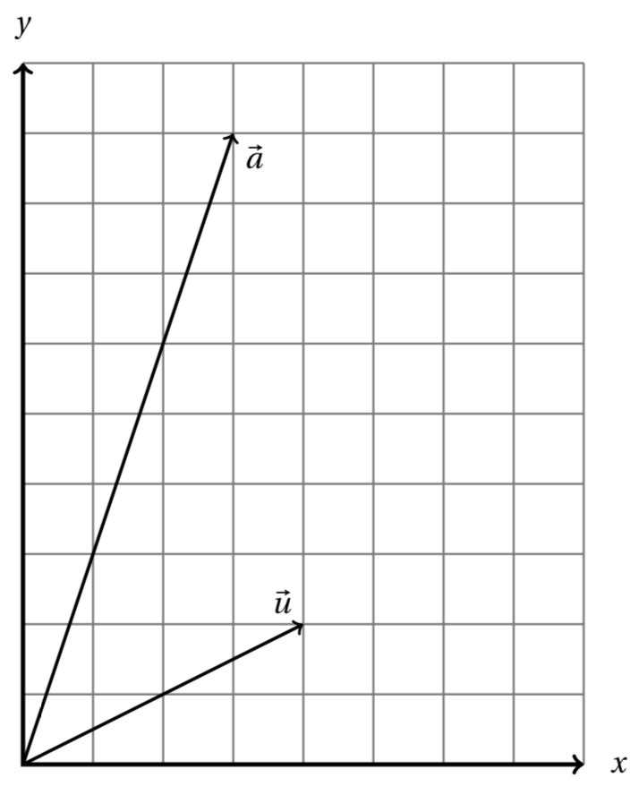

Skip to main content
Contents Calc Dark Mode Prev Up Next \(\require{cancel}\require{extpfeil}\newcommand{\definiteintegral}[4]{\int_{#1}^{#2}\,#3\,d#4}
\newcommand{\myequation}[2]{#1\amp =#2}
\newcommand{\indefiniteintegral}[2]{\int#1\,d#2}
\newcommand{\testingescapedpercent}{ \% }
\newcommand{\bvec}{{\mathbf b}}
\newcommand{\vvec}{{\mathbf v}}
\newcommand{\class}[2][\sim]{\lbrack #2\rbrack_{#1}}
\newcommand{\lt}{<}
\newcommand{\gt}{>}
\newcommand{\amp}{&}
\definecolor{fillinmathshade}{gray}{0.9}
\newcommand{\fillinmath}[1]{\mathchoice{\colorbox{fillinmathshade}{$\displaystyle \phantom{\,#1\,}$}}{\colorbox{fillinmathshade}{$\textstyle \phantom{\,#1\,}$}}{\colorbox{fillinmathshade}{$\scriptstyle \phantom{\,#1\,}$}}{\colorbox{fillinmathshade}{$\scriptscriptstyle\phantom{\,#1\,}$}}}
\newcommand{\sfrac}[2]{{#1}/{#2}}
\)
Worksheet 24.4 Dot products and projection
1. Let
\({\vec v}_1 = (-4,1)\text{,}\) \({\vec v}_2 = (2,2)\text{,}\) \({\vec v}_3 = (1,2,3)\text{,}\) \({\vec v}_4 = (-2,1,0)\text{.}\) Find the values of the following expressions:
(a)
\({\vec v}_1 \cdot {\vec v}_2 = \fillinmath{XXX}\)
(b)
\({\vec v}_3 \cdot {\vec v}_4 = \fillinmath{XXX}\)
(c)
\(\lVert{\vec v}_1\rVert = \fillinmath{XXX}\)
(d)
\(\lVert{\vec v}_4\rVert = \fillinmath{XXX}\)
(e) Are any of these vectors perpendicular to each other?
2. The vectors
\(\vec a = (3,9)\) and
\(\vec u = (4,2)\) are pictured below. Derive the formula for projection on a line and use it to find the projection of
\(\vec a\) on the line spanned by
\(\vec u\text{.}\) Also compute the length of the residual vector.

3.
Consider the vector equation
\begin{equation*}
m \begin{bmatrix}2 \\ 5\end{bmatrix} = \begin{bmatrix}3 \\ 7\end{bmatrix}\text{.}
\end{equation*}
(a) Check that there is no solution
\(m\) that makes the equation true.
(b) Use projection to find the best approximation
\(\hat m\text{.}\)
(c) Compute
\(\hat m \begin{bmatrix}2 \\ 5\end{bmatrix} \text{.}\)
(d) Compute the residual vector.
(e) Compute the length of the residual vector and explain what it means.
4.
Consider the system of equations
\begin{align*}
3t \amp =5\\
2t \amp = 9 \text{.}
\end{align*}
(a) Write the system in vector form.
(b) Find the best estimate,
\(\hat t\text{,}\) of
\(t\) using projection.
(c) Compute the length of the residual vector.